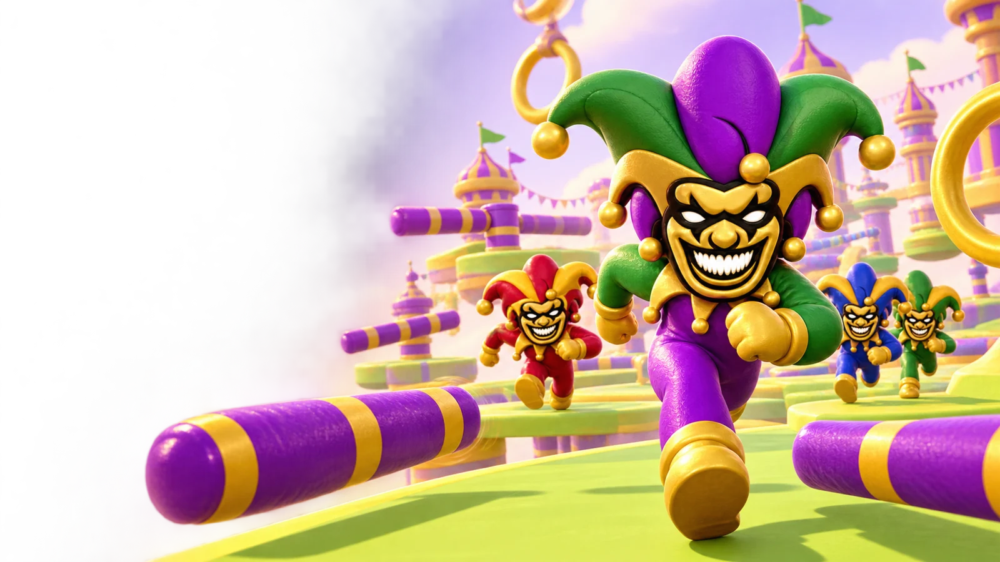

JESTER
RUSH.
Big jumps. Bad decisions.
One glorious finish line.
Make your entrance.
12 RACERSPreview saves: open CASH and copy your private recovery key before closing or reloading. Restore it there to continue your racer.
Real players. No bots. Matchmaking starts with 2+ racers.
Good company.
Questionable coordination.
Share this code with your friends and race head-to-head.
Player-versus-player room. No bot opponents.
Open playgrounds.
Join another player’s public room. Private party codes are never listed here.
Create a private party.
Up to 12 players can join with your room code. Player-versus-player races require at least two connected racers.
Your saved racer.
Progress saves automatically on the server. Keep your private recovery key to restore your profile on another device. Anyone with this key can use your profile, so don’t share it.
Profiles currently use server-side storage. Keep your recovery key; hosting changes can affect locally stored saves.

Finish line energy.
Stay on track.
Mostly.
- MoveWASD or arrow keys. On mobile, use the analog joystick.
- JumpSpace or Jump. Clear gaps and spinning bars. A short jump buffer makes edge jumps more forgiving.
- DashShift or Dash. Burst forward, even in mid-air. Recharges in 2.8 seconds.
- BoostRun over gold arrow pads for a speed boost. Avoid moving gates and padded bumpers.
- RecoverFalling returns you to your last checkpoint. Keep going.
- Play onlineMatch with real players or create a private party. Public races never add bots. Rematches keep the same group.
Cross the finish line before the 90-second timer ends. Three courses offer different layouts and hazards.
Warming up the chaos.
Connecting to the race server…